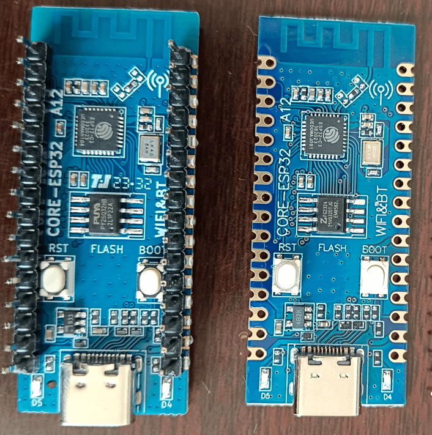
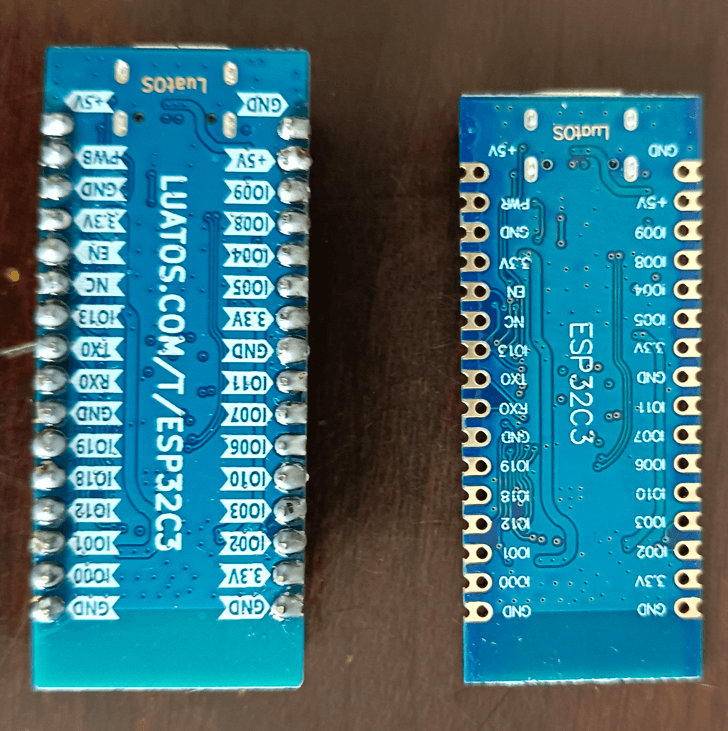

ESP32C3-CORE Development Board#
Warning
Recently, there have been many pirated LuatOS development boards on Taobao. As the quality cannot be guaranteed and the seller’s technical support cannot be obtained, it is recommended that you purchase carefully.
If you need to verify whether it is an official product, please refer to the identification method below.
Genuine Piracy Distinguish Method
Genuine Flash chips are
UnicorPuya, while pirated ones are inferior second-hand chips.The genuine screen printing is clear and obvious, and the pirated screen printing is very fine and blurred.
There are regular production batches of the board factory on the genuine PCB, but there is no piracy.
genuine back is a complete web site, pirated back web site is not complete.
The Pin foot silk screen on the back of the original uses black characters on a white background, and the pirated version uses white silk screen.
Genuine Shen Jin exquisite, pirated Shen Jin rough.
Refer to the following physical diagram：
 
Special attention#
The classic model (version with TTL serial port to USB) must install the driver of CH343 to download the firmware normally. The default CDC driver can only print logs, but the speed is too slow to cause the download to fail. Drive portal
The new (USB direct connection) can be directly burned, Win8 and above systems do not need to install drivers. Luatools burning can be used normally, but LuatIDE cannot be used. Except that firmware with the words USB needs to be selected when burning, * GPIO18/19 will be occupied as USB pin *, which should be avoided, and other functions have no difference.
The on-board factory demo can be viewed through serial port tools, a virtual serial port can be used to control the on-board LED lights through web pages.
Warning
If GPIO18/19 is required for the new model, it can be USB-TTL externally to UART0 for brushing and log viewing, instead of using on-board TypeC for brushing and log viewing..
Note
If you are using Arduino, please select the development board modelAirM2M CORE ESP32C3。
Note
Note that since the win7 system does not come with winusb driver, and Microsoft has stopped supporting the system as early as 2020, if you need to use the simple version development boade, please upgrade to the system above win8, or go to Lexin Original Factory Manual to install the driver.
Brush machine burning tutorial#
Serial Burning Tutorial,Log baud rate is 921600
1. Product Description#
CORE ESP32 The core board is a core board designed based on Lexin ESP32-C3, with a size of only 21mm * 51mm. The board edge is designed with stamp holes, which is convenient for developers to use in different scenes. The core board supports UART, GPIO, SPI, I2C, ADC, PWM and other interfaces, which can be selected according to actual needs.
2. hardware resources#
Dimension length and width 21mm*51mm
1 SPI FLASH, onboard 4MB, support the highest 16MB
2 UART interface, UART0 ~ UART1, where the download port is UART0
5 12-bit ADC, highest sampling rate 100KSPS
1 Low-speed SPI interface, support master mode
1 Road IIC controller
4 PWM interface, can use any GPIO
GPIO 15 external pins, reusable
2 Road patch LED indicator
1 Road reset button 1 road BOOT button
1 Road USB to TTL download debugging port
2.4G PCB onboard antenna
3. Pin Definition#

Detailed Pin Description
**Number ** |
Name |
Default function after reset |
Multiplexing function |
Power domain |
** Pull-down capability** |
|---|---|---|---|---|---|
32 |
GND |
Grounding |
|||
31 |
5V |
5V Power interface, connected to USB VBUS |
|||
30 |
BOOT |
GPIO09,Input |
BOOTMODE |
VDD3P3_CPU |
UP/DOWN |
29 |
IO08 |
GPIO08,input, output, high resistance |
VDD3P3_CPU |
UP/DOWN |
|
28 |
IO04 |
GPIO04,input, output, high resistance |
I2C_SDA/ADC_4 |
VDD3P3_RTC |
UP/DOWN |
27 |
IO05 |
GPIO05,input, output, high resistance |
I2C_SCL/ADC_5 |
VDD3P3_RTC |
UP/DOWN |
26 |
3.3V |
Chip power supply，3.3V |
|||
25 |
GND |
Grounding |
|||
24 |
PB_11 |
GPIO11,input, output, high resistance |
VDD_SPI |
VDD3P3_CPU |
UP/DOWN |
23 |
IO07 |
GPIO07,input, output, high resistance |
SPI2_CS |
VDD3P3_CPU |
UP/DOWN |
22 |
IO06 |
GPIO06,input, output, high resistance |
VDD3P3_CPU |
UP/DOWN |
|
21 |
IO10 |
GPIO10,input, output, high resistance |
SPI2_MISO |
VDD3P3_CPU |
UP/DOWN |
20 |
IO03 |
GPIO03,input, output, high resistance |
SPI2_MOSI/ADC_3 |
VDD3P3_RTC |
UP/DOWN |
19 |
IO02 |
GPIO02,input, output, high resistance |
SPI2_CK/ADC_2 |
VDD3P3_CPU |
UP/DOWN |
18 |
3.3V |
Chip power supply，3.3V |
|||
17 |
GND |
Grounding |
|||
16 |
5V |
5V Power interface, connected to USB VBUS |
|||
15 |
PWB |
Chip 3.3V power supply control, high level valid, no need to suspend |
|||
14 |
GND |
Grounding |
|||
13 |
3.3V |
Chip power supply，3.3V |
|||
12 |
RESET |
Chip Reset |
VDD3P3_RTC |
||
11 |
NC |
||||
10 |
IO13 |
GPIO13,input, output, high resistance |
VDD3P3_CPU |
UP/DOWN |
|
09 |
U0_TX |
GPIO21,input, output, high resistance |
UART0_TX |
VDD3P3_CPU |
UP/DOWN |
08 |
U0_RX |
GPIO20,input, output, high resistance |
UART0_RX |
VDD3P3_CPU |
UP/DOWN |
07 |
GND |
Grounding |
|||
06 |
IO19 |
GPIO19,input, output, high resistance |
USB_D+ |
VDD3P3_CPU |
UP/DOWN |
05 |
IO18 |
GPIO18,input, output, high resistance |
USB_D- |
VDD3P3_CPU |
UP/DOWN |
04 |
IO12 |
GPIO12,input, output, high resistance |
SPIHD |
VDD3P3_CPU |
UP/DOWN |
03 |
IO01 |
GPIO1,input, output, high resistance |
UART1_RX/ADC_1 |
VDD3P3_CPU |
UP/DOWN |
02 |
IO00 |
GPIO0,input, output, high resistance |
UART1_TX/ADC_0 |
VDD3P3_CPU |
UP/DOWN |
01 |
GND |
Grounding |
Any GPIO can be used as a PWM pin, and the number is the same as that of GPIO, but only 4 PWMs can be turned on at the same time. Please pay attention
4. function introduction#
1. Power supply#
CORE-ESP32-C3 The core board supports the following 3 ways of power supply：
Type-C Interface power supply (default）
5V and GND pin supply
3V3 and GND pin supply

Power supply mode to be recommend preferentially during debugging: power supply TYPE-C USB interface.
2. LED Control#
The CORE ESP32 core board carries 2 LEDs. Developers can refer to Table 4-1 for control of corresponding pins.
​ 
Table 4-1
LEDNumber |
Corresponds to GPIO |
Pin function |
Description |
|---|---|---|---|
D4 |
IO12 |
GPIO12 Configuration |
Active High |
D5 |
IO13 |
GPIO13 Configuration |
Active High |
3. Key introduction#
The CORE ESP32 core board carries two keys, of which BOOT key can realize BOOT download function, RST key can realize reset function, and pin control reference table 4-2。
​ 
Table 4-2
**Key Number ** |
Pin Function |
** Description** |
|---|---|---|
BOOT/GPIO9 |
When the key is pressed, the chip enters download mode |
active low |
RST |
When the key is pressed, the chip reset |
active low |
4. External SPI FLASH control#
Pin Control Reference Table 4-3。

Table 4-3
**flash Pin label ** |
corresponds to GPIO |
Pin function |
** Pull-up capability** |
|---|---|---|---|
SPICS0 |
- |
GPIO14 Configuration, FLASH_CS, slice selection |
UP/DOWN |
SPIQ |
- |
GPIO17 Configuration, FLASH_D1, Data Foot 1 |
UP/DOWN |
SPID |
- |
GPIO16 Configuration, FLASH_D0, Data Foot 0 |
UP/DOWN |
SPICLK |
- |
GPIO15 Configure, FLASH_CK, Clock |
UP/DOWN |
Note: The CORE ESP32 core board is equipped with a ESP32-C3 without a built-in FLASH version. The external SPI FLASH is mounted by default. If you encounter a core that does not mount an external SPI FLASH, you need to pay attention to the specific model of the main chip. Using built-in Flash, GPIO11/12/13 is not available.
Schedule 4-4

**Precautions for use **#
BOOT（IO09）The pin cannot be pulled down before power-on, ESP32 will enter download mode.。
Use the IO08 pin for design, and direct external pull-down is not recommended, because the IO08 pin is low when downloading and burning, and serial port cannot be used for downloading.。
IO12（GPIO12）、IO13（GPIO13）In QIO mode, SPI signals SPIHD and SPIWP are multiplexed. In order to increase the number of available GPIO, the development board selects DIO mode using 2-wire SPI. IO12 and IO13 are not connected to flash. When using self-compiled software, attention should be paid to configuring flash to DIO mode。
The VDD of the external SPI flash has been linked to the 3.3V power supply system. No other power supplies need to be configured during use. The common 2-wire SPI communication mode is adopted. The corresponding pins are shown in the table.4-3。
GPIO11 The default is the VDD pin of SPI flash and needs to be configured before it can be used as GPIO.。
GPIO11 Unlock Instructions#
ESP32C3 The default function of GPIO11(VDD_SPI) of is to supply power to flash. VDD of Flash of this development board is directly connected to 3.3, so this IO can be used GPIO.
The following is the operation flow. Note that the following operations can only be performed once and cannot be restored after changes (because fuse bits are set, not registers, one-time operation）
pip installation using python esptool。pip install esptool
Insert the development board into the computer, you can see the port in the device manager, record the port number, for example
COM20Open a command line window and enter the espefuse.py -p port burn_efuse VDD_SPI_AS_GPIO 1
Look at the prompt and enter’BURN’